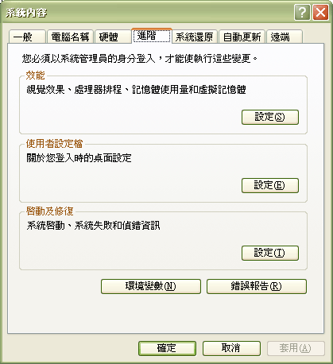

|
|
|
Content:
Installation Notes
1.1.1 Installation Notes
jLIVE support for the latest Java standards including Java 2 (JDK 1.3.1). Before
you install jLIVE, you must install The Java 2 SDK, Standard Edition first. Java
2 SDK, Standard Edition is a product of Sun Microsystems(TM), Inc. Installation
instructions are maintained on the web site: http://java.sun.com/j2se/1.3/download-windows.html
Refer to the copyright and license for legal terms of use.
Installing into a directory path which contains spaces is not recommended. For
example, installing into C:\Program Files\ may cause problems for environment
variables used by the various tools that come with the JDK.
After following the setup guide to install jLIVE, the directory you have should
like below :
[] -- The directory you chose while setup.
[jLIVE]
[doc]
[images]
[jar]
[james]
[mysql]
[preloadimage]
[programs]
[jNorth]
[tomcat]
[xml]
Before you start jLIVE, make sure the environment meet the following
requirements :
Java 1.3 SDK (version 1.3.1 for Chinese, 1.3 for others) had been installed.
Start the database you want to manipulate.
If you want to test the sample program, start the mySQL database first.
Start the middleware, which is serviced by Tomcat 4.0 and resided in the [jLIVE][tomcat][bin]startup.bat path. make sure you specified the JAVA_HOME and CATALINA_HOME environment variables.
During the jLIVE first time running, system will relocate the path which sample program resident.
Step by step :
1. Run
2. Check agree
3. Please click [NEXT] button.
3. Choose destination directory then click Start. ( Please choose C:\jLIVE )
A demo directory had been included in this software bundle with a simple
database example for you to try out. After install jLIVE
and Java 2 SDK, you must start up mySQL.
Start up mySQL : [jLIVE][mysql][bin]winmysqladmin.exe
Boot the localhost application server : Run [jLIVE][tomcat]startup.bat
Now you can run the sample program, just click the jarfile (jnorth.jar) to run the program as a standalone executable application, or click the html file(jnorth.html) to use the browser launch the sample program.
Next you can use
jLIVE to modify the sample program.
1.1.3 Tomcat 4.0.x Quick Start
Tomcat Release Builders : jakarta-tomcat-4.0.1 , http://jakarta.apache.org/builds/jakarta-tomcat-4.0/release/v4.0.1/bin/
The same version you can find in [jLIVE][tomcat].
Before start up Tomcat, you must set the JAVA_HOME and CATALINA_HOME environment variables for Tomcat.
Set environment variable
Window NT/2000/XP
Goto Control Panel -> System -> Advanced Tab -> Environment Variables
Add a new System Variable called JAVA_HOME with the value c:\jdk1.3.1
Add a new System Variable called CATALINA_HOME with the value c:\jLIVE\tomcat

Window 95/98/me
edit C:\autoexec.bat
Add "SET CATALINA_HOME=C:\jLIVE\tomcat" and "SET JAVA_HOME=C:\jdk1.3.1"
Reboot
Start up and shut down the Tomcat
c:\jLIVE\tomcat\bin\startup.bat
c:\jLIVE\tomcat\bin\shutdown.bat
Tomcat
Troubleshooting:
There are only really 3 things that can go wrong during the stand-alone Tomcat
4.0 install:
1) The most common hiccup is when another web server (or any process for that
matter) has laid claim to port 8080. This is the default HTTP port that Tomcat
attempts to bind to at startup. To change this, open the file:
$CATALINA_HOME/conf/server.xml
...and search for '8080'. Change it to a port that isn't in use, and is
greater than 1024, as ports less than or equal to 1024 require superuser
access to bind to.
Restart Tomcat and you're in business. Be sure that you replace the "8080" in
the URL you're using to access Tomcat. For example, if you change the port to
1977, you would request the URL http://localhost:1977/.
2) An "out of environment space" error
when running the batch files in Win9X/ME-based operating systems.
Right-click on the STARTUP.BAT and SHUTDOWN.BAT files. Click on "Properties"
then on the "Memory" tab. For the "Initial environment" field, enter in
something like 4096.
After you click apply, Windows will create shortcuts in the directory with
which you can use to start and stop the container.
3) The 'localhost' machine isn't found. This could happen if you're behing a
proxy. If that's the case, make sure the proxy configuration for your browser
knows that you shouldn't be going through the proxy to access the "localhost"
machine.
In Netscape, this is under Edit/preferences -> Advanced/proxies, and in
Internet Explorer, Tools -> Internet Options -> Connections -> LAN Settings.
jLIVE support JDBC version 2.0 API. The driver vendor list, refer to web site http://industry.java.sun.com/products/jdbc/drivers. There are 155 kinds of drivers currently available. jLIVE support the type-1 driver also, so you can use the JDBC-ODBC bridge to connect your database. if you choose the JDBC-ODBC bridge for your connection to database, the performance maybe not good enough for you. You can visit the web site : http://www.merant.com and download a trial version Merant ODBC Driver Pack(Connect ODBC 3.6), that will significantly improve the database performance.
MSSQL Server user can visit the web site : http://www.inetsoftware.de/ (i-NET
Software company) to download a trial version of JDBC driver for MSSQL. that is
a pretty good driver for MSSQL to adopt.
All the drivers you
choose to use in jLIVE, you must refer the vendor installation notes to get to
know how to install, how to rewrite the java classpath
in order to make the system can launch the driver, and how to specify the
database URL format String.
Driver Setting Example : '*' is for notes only, do not key in the character
JDBC-ODBC bridge for MS ACCESS connection
Run ODBCAD32.EXE (%SystemRoot%\system32\odbcad32.exe) to create a ODBC DSN. e.g. "MYODBC"
Boot Application Server(run [jLIVE][tomcat]startup.bat).
Run jLIVE,
after created a new application and a new database for application, Set
database setting page specifics :
DB Alias : MYODBCALIAS **
Driver : sun.jdbc.odbc.JdbcOdbcDriver
Url : jdbc:odbc:MYODBC
*All of above settings are case sensitive.
**You can type any name you prefer as the DB Alias, that will be used
in application to refer to this database.
Press Save
Update button then press Test Connection button. System will report
connection status.
JDBC for mySQL connection
Start up mySQL : [jLIVE][mysql][bin]winmysqladmin.exe
Boot Application Server(run [jLIVE][tomcat]startup.bat).
Run jLIVE, after created a new application and a new database for application, Set database setting page specifics :
DB Alias : MySQL_DB **
Driver : org.gjt.mm.mysql.Driver
Url : jdbc:mysql://HostName:3306/DatabaseName
* All of above settings are case sensitive
** DB Alias can type any name you prefer, that will be used in application to refer to this database.
*** HostName : Key in the database host name.
**** DatabaseName : Key in the database name.
Press Save Update button then press Test Connection button. System will report connection status.
JDBC for ORACLE connection
Boot Application Server(run [jLIVE][tomcat]startup.bat).
Run jLIVE, after created a new application and a new database for application, Set database setting page specifics :
DB Alias : ORACLE_DB **
Driver : oracle.jdbc.driver.OracleDriver
Url : jdbc:oracle:thin:@HostName:1521:DatabaseName
* All of above settings are case sensitive
** DB Alias can type any name you prefer, that will be used in application to refer to this database.
*** HostName : Keyin the database host name.
**** DatabaseName : Keyin the database name
Press Save Update button then press Test Connection button. System will report connect status.
iNet MSSQL Driver
Install i-netSPRINTA, follow user guide to make Java can launch the inet driver.
Boot Application Server(run [jLIVE][tomcat]startup.bat).
Run jLIVE, after created a new application and a new database for application, Set database setting page specifics :
DB Alias : MSINET **
Driver : com.inet.tds.TdsDriver
Url : jdbc:inetdae7:HostName:1433?database=DatabaseName&charset=Cp950
* All of above settings are case sensitive
** DB Alias can type any name you prefer, that will be used in application to refer to this database.
*** HostName : Key in the database host name.
**** DatabaseName : Key in the database name
***** Cp950 : Key in the char set (Options), for Chinese please type Cp950 or Ms950 (for Japanese please type JIS0212)Press Save Update button then press Test Connection button. System will report connect status.
1.1.5. Minimum System Requirements
To install and run jLIVE, you must meet the following minimum system
requirements:
Intel Pentium/166Mhz or Compatible
Microsoft Windows 95/98 or NT 4 (SP3) or 2000/XP
64MB RAM
150MB Hard Disk space for Compact Install
CD-ROM Drive
SVGA or higher resolution (800x600, 256 Color)
Mouse or other pointing device
|
|
|
|
Copyright © 2001~ 2004 Probe.com.tw . All Rights Reserved.
Questions, comments, and suggestions to Service@probe.com.tw